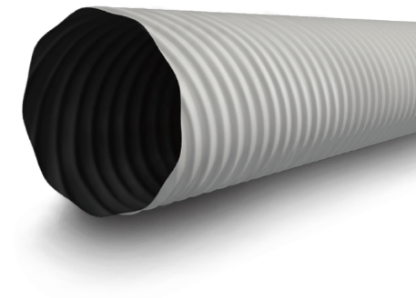
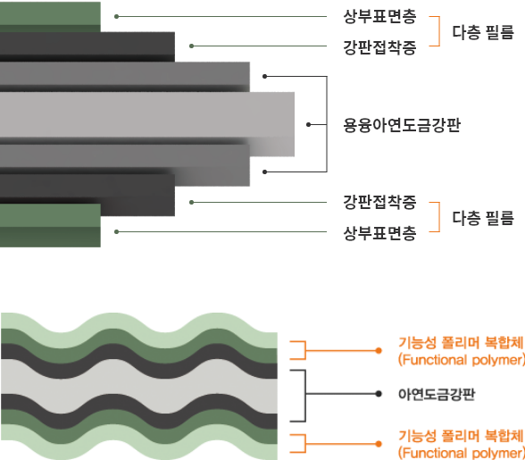
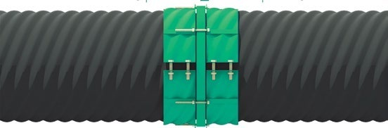

Çelikle güçlü bağ.
Yüksek frekanslı indüksiyonla ısıtma, fonksiyonel çok katmanlı filmi çeliğe bağlar.

0RS · 1RS · 3RS / NPE kaplamalı · SL düz iç yüzeyli koruge çelik boru
Daehan Steel Pipe’ın NPE kaplamalarından Shinhan Steel Pipe’ın SL düz iç yüzeyli borularına; profilleri, kaplamaları ve bağlantıları birlikte inceleyin.
Koruge profili kullanım ve tasarım koşullarına göre seçilir. Profil türü, kaplama ve düz iç yüzey yapısı ayrı ayrı doğrulanmalıdır.

| Koruge profili | Hatve P | Derinlik H |
|---|---|---|
| 0RS | 38.0 mm | 6.5 mm |
| 1RS | 68.0 mm | 13.0 mm |
| 3RS | 76.2 mm | 25.4 mm |
Küçük çaplı drenaj ve toplama borularından karayolu geçiş menfezlerine kadar çap, örtü, yük ve hidrolik koşullar değerlendirilir.
Standart borulara ait tipik koruge ölçüleridir. Çap, et kalınlığı ve düz iç yüzeyli modellerin kapsamı için üretici kataloglarına başvurun.
Çeliğe bağlanan fonksiyonel çok katmanlı film —
Daehan Steel Pipe’ın yüksek yapışmalı kaplama teknolojisi.

Yüksek frekanslı indüksiyonla ısıtma, fonksiyonel çok katmanlı filmi çeliğe bağlar.
Ürün; kaplamanın korozyon, kimyasal ve aşınma dayanımı dikkate alınarak kullanım ortamına göre seçilir.
Yüksek yapışmalı fonksiyonel film, hasarlı kaplamanın onarılabilirliği dikkate alınarak uygulanır.
İç akışkanı ve dış zemin ortamını birlikte değerlendirerek,
iç kaplamalı veya çift taraflı kaplamalı tip seçilir.
Borunun iç yüzeyine fonksiyonel kaplama uygulanır.


Borunun hem iç hem dış yüzeyine fonksiyonel kaplama uygulanır.

Daehan Steel Pipe kataloğu, hasarlı kaplamanın onarımını kolaylaştıran yüksek yapışmalı fonksiyonel filmli koruge çelik borunun NEP belgelendirme geçmişini tanıtır.
SL düz iç yüzeyli koruge boru, dış koruge çelik cidarı iç düz çelik astarla birleştiren çift katmanlı yapıdır.

Dış koruge cidar yükleri taşırken düz iç yüzey akışı destekler. Shinhan’ın SL (Sealed Lock-Seam) sistemi, kaplama katmanıyla birlikte kenet birleşiminde sızdırmazlık malzemesi kullanır.
Boru gövdesinin kenet sızdırmazlığı ile saha bağlantılarındaki conta ve sıkma koşulları birlikte kontrol edilir.


Katalogdaki deney sonuçları ilgili numune ve koşullar için geçerlidir. Uygulanacak model ve proje koşulları ayrıca doğrulanmalıdır.
Bağlantı elemanları; koruge profili, çap, yeniden şekillendirilmiş uçlar ve sızdırmazlık gereksinimlerine göre seçilir.

Yeniden koruge edilmiş boru uçlarının çevresine conta yerleştirilir; bant cıvatalarla sıkılır.

Boru ucu flanşları, merkez bağlantı elemanı ve sızdırmazlık kauçuğu birleştirilip sıkılır.
Katalogda, boru uçlarının içine manşon yerleştirilip dıştan ısıyla daralan bantla tamamlanan bağlantı da tanıtılmaktadır.
Çap, uzunluk, koruge profili, kaplama düzeni ve bağlantı elemanlarını birlikte doğrulayın.
Kaynaklar: Daehan Steel Pipe kataloğu s.6–15, Shinhan Steel Pipe kataloğu s.6–13 ve Daehan NPE ürün tanıtımı. Belgelendirme geçmişi ile güncel geçerlilik birbirinden ayrıdır.
Ürün, tasarım ve saha desteği için bize ulaşın.